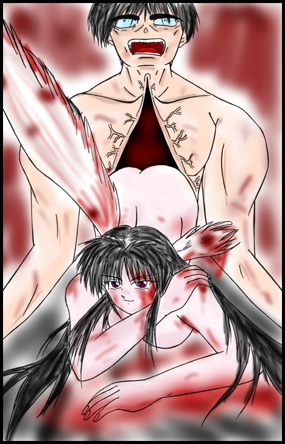

「うー……むずかしいにゃ」
「そうはいっても、これだけは何とかしてくれねえとな。金が貰えん」
とある日の午後、俺は永の出張から帰ってきたレオナと事務所にたむろっていた。一応金を貰ってする仕事だから、報告書というものを造らねばならない。普段は俺が全部するのだが、レオナはこの間まで全寮制の女子校へ行っていたため、事情が全く分からない。コレではどうしようもないのでレポートを書いてもらうことにしたのだが、どうも要領を得ない。レオナの元の玲音少年は成績優秀だから訳はないと思ったのだが、どうもそう単純には行かないようだ。
「けどコスプレしまくったとか言ってたが、何だったんだ、一体」
「いろいろあったにゃ」
特に説明しようとはせず、レオナはそう答えた。
「オトコとオンナって、難しいんだにゃ。そう言えば大社には恋人はいるのかにゃ？」
俺は危うく銜えていたたばこを落とすところだった。そいつを灰皿に押しつけて、俺はレオナに言った。
「な、何なんだ、一体」
「別に」
特に顔色も変えず、淡々と言うレオナ。
「ただ何となく気になっただけにゃ。大社って割と遊んでそうな割には変に堅いとこもあるし……恋人付き合いしたことって、あるのかにゃ？ もちろん、大人の恋愛にゃ。小学生のおままごとじゃない奴にゃよ」
「ああ」
俺はエアコンのスイッチを冷房から除湿に切り替えた。外を見ると今にも泣きそうになっている。そのまま片隅に放り出されているＣＤラジカセに、パチンコで取ってきたディスクを突っ込んだ。
それに合わせたかのように、ぽつぽつと雨の音が始まる。
「大学生の頃にな……ただあんまりロマンティックじゃなかった。ハーレクインロマンより、まんがの森の方が似合うような話だったな」
「何にゃの、それ」
「『縁』さ……それも俺の一生を狂わせた、な」
何でそんな気になったのか判らない。昼下がりの雨の魔性か、俺は誰にも話したことのないあの事件の話を、ぽつり、ぽつりとレオナに話し始めていた。
大学に入って二年目、俺は奇妙な人物と知り合いになった。矢野礼治。幻想現実研会長。学園でもかなり有名な変人であった。現在４回生。頼りになりそうないい男なのに、何故か女っ気ゼロ。あまりにも変わった思想の持ち主であり、なおかつどんな女性の誘惑にもなびかない。ホモだという説も根強く残っている。
俺の所属していた文学部は、二年目に郊外のキャンパスから、都内のキャンパスに移る。そこで部員の募集をしている彼を見かけたのが、始めての出会いであった。
「幻想現実研？」
「そう、幻想文学研じゃないぞ。現実研だ」
「……なんなんです、それ」
幻想と現実という、矛盾した表現に俺は興味を覚えて、立て看板を持っていた彼に話しかけていた。
「まあ、一歩間違うと唯のオカルト研だな。幻想文学に語られている数々の事象。これらのルーツを探るのが本道だ。この世にあり得ない幻想は一体どこから来たのか。作者の妄想か、幼い頃聞いた昔語りの変形か、あるいは……現実だったのか。そういうことを研究するサークルさ」
俺はあきれると共に興味も持った。彼の思想を、俺は否定できなかった。なぜなら……普通の人なら妄想と決めつける事象の中に、ほんのわずかとはいえ、『現実』が存在することを、俺は知っていたからだ。
「面白そうですね」
そして俺は何となく見てみたくなっていた。この人の『研究』を。それを決定づけたのが、次の彼の一言だった。
「それは嬉しいな。君、見える人なんだろ？」
「……よく分かりましたね」
俺は少々声を落として頷く。
「まあ、はっきりと見える訳じゃありません。何となく分かる程度ですね。俺にはいわゆる、『見る』力はありませんから」
「それでも結構。これでやっと研究が進められそうだ」
「というと？」
「俺もまあ見える方でな。ただ俺一人じゃ本物かどうか区別が付けられん」
もっともだ、と俺は深く頷いた。これで俺の腹は決まっていた。
「面白そうですし、お世話になりますよ」
俺がそういうと、彼は文字通り飛び上がって喜んだ。俺の両手をがっちりと握りしめ、ブンブンと上下に振り回し、その上感動の涙まで流しながら大声で叫んだくらいだった。
「ありがとう、同士よ！ 苦節４年、努力は無駄ではなかった！」
俺は頭を掻きたかったが、両手がふさがっていてそれもままならなかった。
「あれ？ そうするとその先輩と大社の間には、深ーい縁が出来たんじゃにゃいの？」
「ああ。もっともその時の俺は、まだ手を繋ぐことの意味に気付いてなかったんでな。つくづく日本で良かったぜ。普通こっちじゃいちいち握手はせんからな」
「で、どうなったにゃ？」
「それからしばらくは楽しかったよ……随分仲良くなって、大抵いつも一緒にいた。授業中くらいだったな、別々にいたのは」
「ふぇっ？」
レオナが奇声を上げる。
「そりゃまた随分……」
「先輩の紹介で、下宿屋の隣の部屋が借りられてな。古すぎて先輩しか住んでない上、取り壊しの話が日照権がらみで宙に浮いていて、厄介な物件だったらしい。渡りに船だったよ」
「それも縁だにゃ」
「ああ。おかげでホモ疑惑が再燃した。もっとも当時の俺はそういわれても不思議じゃなかったがな」
実際、当時の俺は先輩が本物で、押し倒されたとしても受け入れかねないくらいはまりこんでいた。先輩と付き合って、俺は如何に自分が他人とのつきあいに距離を置いていたのかを自覚してしまったのだ。再婚してできた親父の特殊な仕事。隠してはいても、少しは力のあった俺は、その事にすぐ気が付いてしまった。ある程度は修行もしたりした。のはいいんだが、こうして得たものが逆に普通の学園生活では重荷になっていった。その事が友人達との間に、微妙な壁を作っていたのだ。
それが先輩との間には存在しなかった。俺と先輩は文字通りの親友になっていたのだ。
そして俺と組んでからは、先輩の研究はぐんぐんはかどっていった。ただそれはどう見てもよた話の集合で、卒論として通るのかは端から見ても不安であったが。
また俺はこの世の常識が如何に虚偽にまみれているかを先輩を通して知り、裏の真実を学ぶことが出来た。
科学万能？ プラズマ？ 冗談じゃない。それは気が付いていないだけのことなんだ。ニュートンやアインシュタインが出てくる前に今の物理学の話をして見ろ。まず間違いなく変人扱いされるぞ。霊も魔法もこの世には存在している。ただ、今の社会には馴染まないだけのことだ。どっちもある種の才能のある人間にしか関知することの出来ない存在だから、その力のない人間にはそういうのは存在しない、いや、存在しちゃいけない物なのだ。
そして少数者の意見は、多数に埋没する。そういうものは、無いことにされる。
だがそういうものは、無人の森で倒れた木の音のように、確かに存在しているのだ。関知できる側の存在であった俺は、その事を先輩を通じていっぱい見ることが出来た。
何しろ『見る』事にかけては俺より遙かに力の強い先輩だ。着実に本物を見出し、広げられたコネはかなりの物だった。
そんなある日、先輩は喜色満面と言った様子で俺に話しかけてきた。
「よっ、大社、喜べ」
「なにをです？」
「面白い物を手に入れてきたぞ」
そういって先輩が差し出したのは、マシュマロとたまごボーロのあいのこみたいな小さな珠だった。
「なんすか？ これ」
そう聞く俺に、先輩はにんまりとしか言い様のない笑みを浮かべて言った。
「願いの叶うものさ」
変な言い回しだ。願いを叶える、じゃないのか？
「と言うか、アレだな。これは妖精のたまごだ」
「妖精のたまご？」
さしもの俺もぶっ飛んだ。妖精、といわれるものが存在していることは俺も先輩も知っている。だが実物を見たことは流石にないし（彼女たちはヨーロッパ原産なのだ）、ましてやたまごから孵るなんて事は聞いたこともない。
だが俺は同時に先輩がこの手のもので紛い物を掴んだことが一度もないのも知っていた。
「妖精って奴は、歌とか、物語とか、恋心とか、とにかく人の持つある種の精神活動時に発せられるオーラみたいなものを食って生きてんだ。んで妖精達の間でその手の感情が高まると、力が結晶化してたまごになる。それがこれさ。コイツを人の側に置いておくと、人のオーラを受けて妖精が孵る。そして孵った妖精は恩返しに孵した人の願いを一つ、聞いてくれるのさ。ま、妖精に出来る程度のことだから、大した願いは叶えられないがな」
「……よく調べましたね、そんなこと」
俺は半ばあきれていった。
「というか、ルーツなんだよ、俺の」
「ルーツ？」
先輩は意味ありげに俺の方を見た。
「俺の力はな、先祖が妖精から貰ったモンなんだよ。グラムサイトって言ってな」
「いっ」
さすがに俺もぎょっとした。
「まあ、そうあわてるなって。何でも俺の爺さんが、ヨーロッパの方で妖精と縁があったらしい。ちょっとだけ、『力』を持ってたらしいな。で、妖精のたまごを孵して、かけた願いが、『もっとあんた達をはっきり見たい』だったらしい。で、願いは叶ったんだが、それ以外も色々見えるようになっちまったらしい。おまけに子孫代々、きっちり長男に力が遺伝してやがる。俺の親父も、『見える』人だったぜ。ありがたいというか、めーわくというか」
俺も納得した。いかにも妖精らしい話でもあった。
「で、何を願う気なんですか？」
そう聞いたら、先輩は意味ありげなにやにや笑いを浮かべていった。
「秘密だ。だが叶ったらいの一番にお前に教えてやるよ。ま、楽しみに待ってな」
「そうさせていただきます」
それから数日。俺は胸に沸き上がってくる不安を押し込むのに必死になっていた。霊感ではない。そうなら俺はこれを押し込めたりはしない。
先輩の様子が尋常ではなくなってきていた。
痩せてきているのだ。
割とがっちりしていた体が、明らかに細くなっていた。筋肉も相当落ちている。何より脂肪が減っていた。
あばらもうっすらと浮き出している。
「どうしたんですか、一体」
俺が聞いても、先輩はいつもの顔で笑うだけだった。
「何、心配するな。一時的なもんさ」
「一時的って……」
「例の妖精の願い、ちょっくら重い願いだったらしくてな。叶えるためにはちょっくら反動があるらしい。たまごが孵るまでの一ヶ月くらいは、こんな調子だってよ」
だが先輩は、日に日に痩せていった。二週間目には、遂に倒れかけた。
「やっぱ変ですよ、先輩」
「いや、これでいいんだ」
だが、何故か先輩は強情だった。医者に連れていったら、親友のお前とでも縁を切る、と言い切られた。
「はっきり言って孵るときには、俺は骨と筋だけみたくなるはずだ。だが、決して死にはしない。それだけは信じろ」
そう言って俺の背中で寝入ってしまった。
だが俺は先輩を信じるかどうか迷っていた。
聞こえてしまったからだ。
背中の先輩から微かに響く、「カリカリカリ……」という音を。
何かが、固いものを囓っているような音。
それは絶対に、人間の体内で発せられる音ではなかった。
「カ、カリカリ……」
レオナが真っ青になってつぶやく。
「ホントに、そんな音がしたのかにゃ？」
「ああ……本当だ。何度このまま先輩を医者にかつぎ込もうか、そう思ったよ」
「ね、大社、これ、怪談じゃにゃいの？」
俺は非情にも言い切った。
「いや、実話だ」
そう言ってレオナの顔をじっと見つめる。
「……この辺で止めとくか？」
「冗談じゃにゃいにゃ！」
レオナは真っ青な顔を真っ赤に染めるという器用な真似をして、立ち上がりつつ俺を睨み付けた。
「このままオチを聞かにゃかったら、怖くて眠れにゃいにゃ！」
「そうか」
俺はソファーに身を沈め、続きを語りだした。
３週間目。
先輩は起きあがれなくなっていた。
生きているのが不思議なくらいだ。
大量に買い込んだミネラルウォーターを、さらに備長炭で煮沸浄化した湯冷ましだけを、ひたすら飲むだけの毎日。
「ホントに大丈夫なんですか？」
「信じろ。もう少しだ」
そして不思議なことに、俺はそれを信じた。大学にも行かず、ひたすらお湯を沸かす日々。備蓄のインスタントラーメンだけが、過ぎゆく時を示していた。
ホモ扱いされるのを覚悟で、夜も先輩の隣に寝ていた。
カリカリカリカリカリカリ……
肌に触れると、その音は着実に大きくなって、俺の耳に届いてきた。
そして、一週間が瞬く間に過ぎた。
「あれ……」
目を覚ますと、隣にいるはずの先輩がいなかった。部屋をぐるりと見渡すと、東の窓が開け放たれ、そこから朝の冷気と日射しが、部屋の中に降り注いでいた。
そして先輩は、反対側の壁に座り込んでいた。
日射しの中、目は虚ろで、体はぴくりとも動かない。
あれだけ水ばかり飲んでいたのに、肌は乾ききっている。その時俺は、この一週間、先輩が一度もトイレに行かなかったことに気が付いた。
それは先輩でありながら、何か別のものに見えた。
遠い記憶が、揺さぶられる。そう、あれは……
その時だった。
ぴしり、という音が、室内に響きわたった。
その音に、俺の記憶が結びついた。
カブトムシの蛹だった。
そしてそれは間違っていなかった。
ぴしり、ぴしり……
先輩が、裂けていた。喉頭の辺りから、腹部に向かって、一筋の裂け目が走っていく。
俺は目を離せなかった。
股間の辺りまで裂け目が達したとき、それが内側から盛り上がり始めた。
ぴしり。
乾いた音と共に、赤い液体にまみれて、白い腕が裂け目から飛び出した。
ぴしり。
さらにもう一本の腕が、裂け目から飛び出す。そして。
ぴしぴしぴし……
二本の腕は、裂け目を大きく広げた。赤いものが、どろりと流れ出す。
先輩の中は、空っぽだった。
そして二本の腕の根本には、当然本体があった。
赤にまみれていても曇らぬ美しさに彩られた、羽のある乙女の姿が。
そして生まれたての乙女は、口を開いた。そこからころころとした美しい声が流れ出る。

※匿名・仮名で構いません。
※書き込み後は、ブラウザの「戻る」ボタンで戻って下さい。